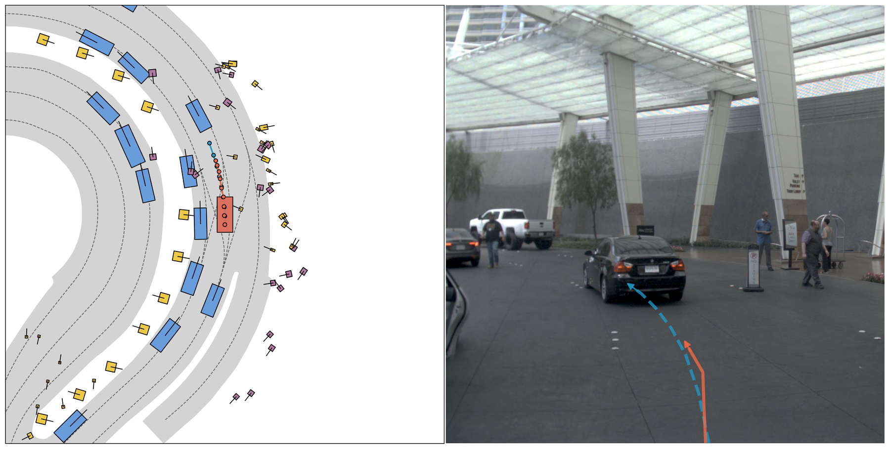
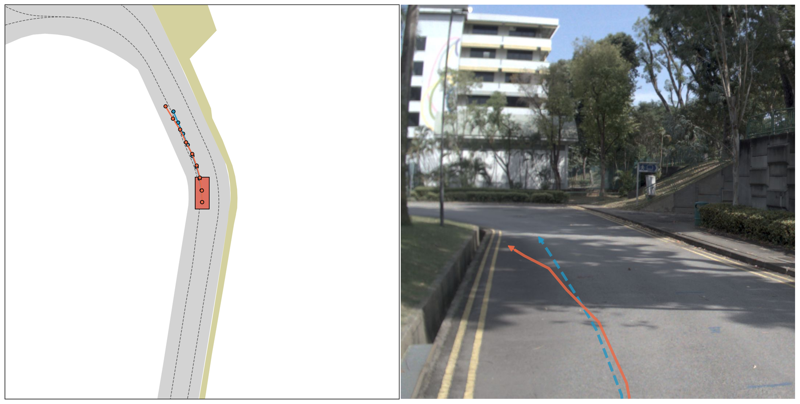
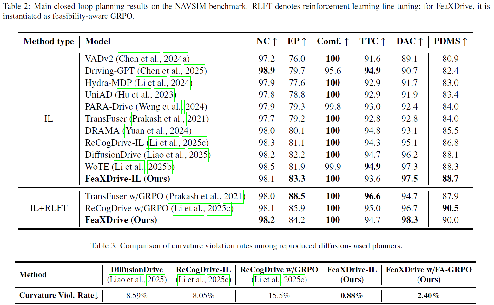

Results Comparison
Baseline

Ours

Baseline

Ours

Baseline

Ours

End-to-end diffusion planning has shown strong potential for autonomous driving, but the physical feasibility of generated trajectories remains insufficiently addressed. In particular, generated trajectories may exhibit local geometric irregularities, violate trajectory-level kinematic constraints, or deviate from the drivable area, indicating that the commonly used noise-centric formulation in diffusion planning is not yet well aligned with the trajectory space where feasibility is more naturally characterized. To address this issue, we propose FeaXDrive, a feasibility-aware trajectory-centric diffusion planning method for end-to-end autonomous driving. The core idea is to treat the clean trajectory as the unified object for feasibility-aware modeling throughout the diffusion process. Built on this trajectory-centric formulation, FeaXDrive integrates adaptive curvature-constrained training to improve intrinsic geometric and kinematic feasibility, drivable-area guidance within reverse diffusion sampling to enhance consistency with the drivable area, and feasibility-aware GRPO post-training to further improve planning performance while balancing trajectory-space feasibility.
Experiments on the NAVSIM benchmark show that FeaXDrive achieves strong closed-loop planning performance while substantially improving trajectory-space feasibility. These findings highlight the importance of explicitly modeling trajectory-space feasibility in end-to-end diffusion planning and provide a step toward more reliable and physically grounded autonomous driving planners.

Qualitative comparison of proposed FeaXDrive model in NAVSIMv1 benchmark.
Baseline
Ours
Baseline

Ours
Baseline

Ours
@article{feaxdrive2026,
author= {Wang, Baoyun and Li, Zhuoren and Yu, Ran and Yu, Che and Zhang, Xinrui and Liu, Ming and Hu, Jia and Lv, Chen and Leng, Bo},
title= {FeaXDrive: Feasibility-aware Trajectory-Centric Diffusion Planning for End-to-End Autonomous Driving},
year= {2026},
eprint={2604.12656},
archivePrefix={arXiv},
url={https://arxiv.org/abs/2604.12656},
}